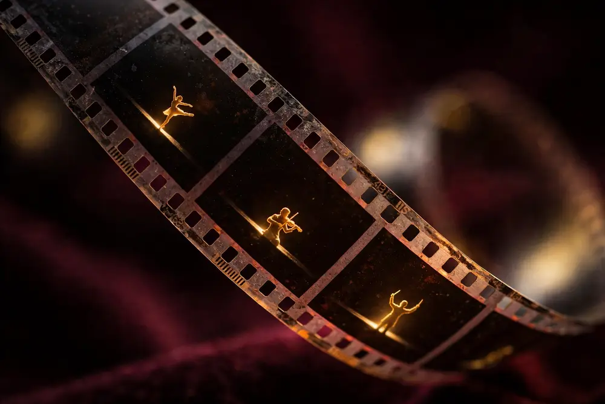
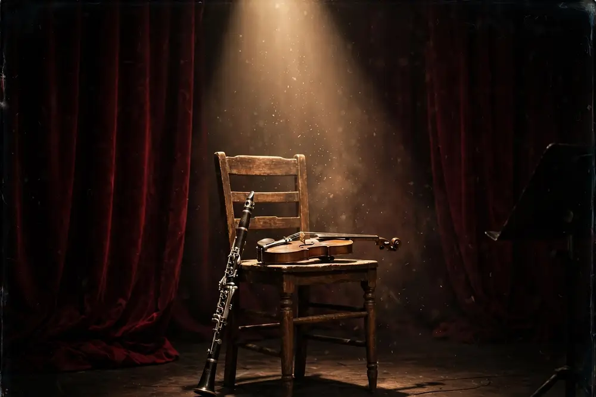
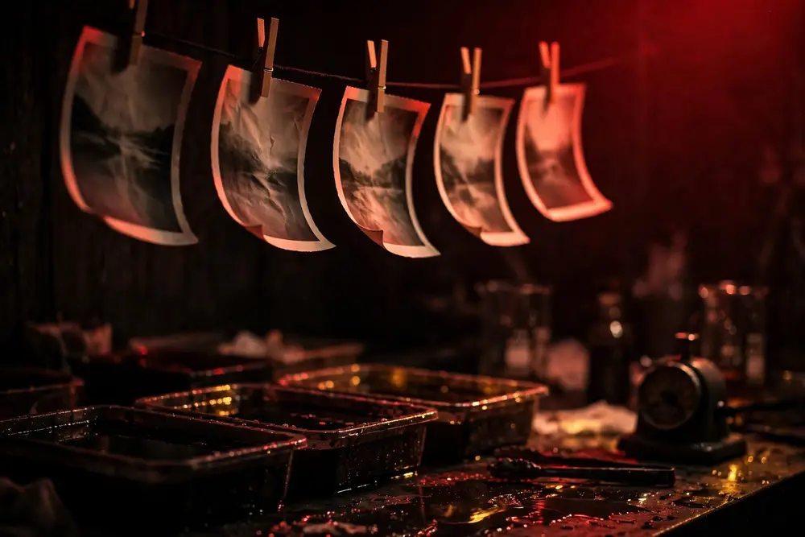

Cinematic film still, 35mm film photography aesthetic with visible film grain. An empty dark theatre stage: a single dramatic cone of warm golden spotlight falls from above onto a black grand piano standing alone center stage, dust motes drifting inside the light beam, deep burgundy wine-red velvet curtain folds in shadow at the sides, dark wooden stage floor with soft reflections. Deep wine-red, black, warm spotlight-gold and cream palette, strong chiaroscuro, moody and quiet, no people, no text, no letters, no numbers, no watermark, no logo.
IMG-002時間軸・2025｜概念插畫｜3:2｜參考照片：無
暗房紅光下，雙手持底片相機，沖洗盤與晾掛的照片在背景。
Cinematic film still, 35mm film photography aesthetic with visible film grain. Inside a photographic darkroom bathed in deep red safelight: a pair of hands holds a vintage mechanical film camera, seen from behind and to the side, the person's face not visible, developing trays and hanging prints blurred in the dark background, faint steam rising from a tray. Deep red, black, warm amber-gold and cream palette, strong chiaroscuro, moody and tactile, no visible face, no text, no letters, no numbers, no watermark, no logo.
IMG-003五大部門橫幅｜概念插畫｜3:2｜參考照片：無

捲曲的底片條，格子裡是舞者、小提琴手與指揮的金色剪影。
Cinematic macro film still, 35mm film photography aesthetic with visible film grain. A curling strip of 35mm film negative sweeping diagonally across a dark background, the sprocket holes crisp, and inside each film frame a tiny glowing silhouette of a stage performance: a dancer mid-leap, a violinist, a conductor's raised arms, all backlit in warm gold. Deep black, burgundy wine-red, spotlight-gold and cream palette, dramatic side lighting, shallow depth of field, no text, no letters, no numbers, no watermark, no logo, no faces looking at camera.
IMG-004學經歷｜概念插畫｜3:2｜參考照片：無
腳架上的老式大畫幅木製相機，側光擦過木頭與皮腔。
Cinematic film still, 35mm film photography aesthetic with visible film grain. An old wooden large-format bellows camera on a sturdy wooden tripod standing in a dark vintage photo studio, dramatic warm spotlight from the side raking across the polished wood and black leather bellows, deep burgundy backdrop curtain in shadow, faint dust in the light, a small stool beside it. Deep wine-red, black, warm spotlight-gold and cream palette, strong chiaroscuro, nostalgic and quiet, no people, no text, no letters, no numbers, no watermark, no logo.
IMG-005專長・攝影書與教學｜概念插畫｜3:2｜參考照片：無
桌上疊放的攝影書，一本攤開在燈下，旁邊是茶與放大鏡。
Cinematic film still, 35mm film photography aesthetic with visible film grain. A tall stack of large photography books on a worn wooden desk, one book open showing an abstract black-and-white photograph, a warm brass reading lamp casting a pool of golden light over the pages, dark room beyond, a magnifying loupe and a cup of tea beside the books. Deep black, burgundy wine-red hints, warm spotlight-gold and cream paper palette, strong chiaroscuro, quiet and scholarly, no people, no text, no letters, no numbers, no watermark, no logo.
IMG-006時間軸・2018｜概念插畫｜3:2｜參考照片：無

空椅子上的單簧管與小提琴，聚光燈打下，人剛離開。
Cinematic film still, 35mm film photography aesthetic with visible film grain. An empty wooden chair on a dark theatre stage, a clarinet leaning against the chair and a violin resting on its seat, a single warm spotlight cone falling from above, deep burgundy velvet curtain folds in shadow behind, dust motes in the beam, a music stand silhouette at the edge. Deep wine-red, black, warm spotlight-gold and cream palette, strong chiaroscuro, still and poetic, no people, no text, no letters, no numbers, no watermark, no logo.
IMG-007聯絡｜概念插畫｜3:2｜參考照片：無

暗房裡晾掛沖洗中的照片，紅色安全燈下，藥水盤在下方。
Cinematic film still, 35mm film photography aesthetic with visible film grain. Inside a darkroom, a row of freshly developed black-and-white photographic prints hangs from a line with wooden clips, gently curling, glowing softly against the darkness under a deep red safelight, chemical trays and a timer blurred below, faint red reflections on wet surfaces. Deep red, black, warm amber-gold and cream palette, strong chiaroscuro, atmospheric and tactile, no people, no text, no letters, no numbers, no watermark, no logo.
IMG-008專長・活動與婚禮紀錄｜概念插畫｜3:2｜參考照片：無
黃昏廟埕前的打擊樂演出剪影，廟宇屋脊、燈籠與暮色。
Cinematic wide film still, 35mm film photography aesthetic with visible film grain. At dusk in a temple courtyard in Taiwan, the backlit silhouettes of percussion performers playing drums and gongs on a low outdoor stage, ornate temple rooflines and hanging lanterns silhouetted against a warm amber-gold dusk sky fading to deep indigo, thin haze, a few string lights glowing. Deep black silhouettes, warm gold and cream sky, touches of deep wine-red from lanterns, dramatic backlight, no faces visible, no text, no letters, no numbers, no watermark, no logo.
全部圖片 JSON 陣列（原樣）
[{"alt":"概念插畫：空舞台上聚光燈打在平台鋼琴上，兩側是深酒紅布幕","caption":"空舞台上一束聚光燈打在平台鋼琴上，布幕深垂、塵埃浮光。","file":"images/IMG-001.webp","id":"IMG-001","prompt":"Cinematic film still, 35mm film photography aesthetic with visible film grain. An empty dark theatre stage: a single dramatic cone of warm golden spotlight falls from above onto a black grand piano standing alone center stage, dust motes drifting inside the light beam, deep burgundy wine-red velvet curtain folds in shadow at the sides, dark wooden stage floor with soft reflections. Deep wine-red, black, warm spotlight-gold and cream palette, strong chiaroscuro, moody and quiet, no people, no text, no letters, no numbers, no watermark, no logo.","ratio":"3:2","ref":"無","section":"開場背景","type":"概念插畫"},{"alt":"概念插畫：暗房紅光下雙手持底片相機，背景是沖洗盤與晾掛的照片","caption":"暗房紅光下，雙手持底片相機，沖洗盤與晾掛的照片在背景。","file":"images/IMG-002.webp","id":"IMG-002","prompt":"Cinematic film still, 35mm film photography aesthetic with visible film grain. Inside a photographic darkroom bathed in deep red safelight: a pair of hands holds a vintage mechanical film camera, seen from behind and to the side, the person's face not visible, developing trays and hanging prints blurred in the dark background, faint steam rising from a tray. Deep red, black, warm amber-gold and cream palette, strong chiaroscuro, moody and tactile, no visible face, no text, no letters, no numbers, no watermark, no logo.","ratio":"3:2","ref":"無","section":"時間軸・2025","type":"概念插畫"},{"alt":"概念插畫：捲曲的底片條，格子裡是舞者、小提琴手與指揮的金色剪影","caption":"捲曲的底片條，格子裡是舞者、小提琴手與指揮的金色剪影。","file":"images/IMG-003.webp","id":"IMG-003","prompt":"Cinematic macro film still, 35mm film photography aesthetic with visible film grain. A curling strip of 35mm film negative sweeping diagonally across a dark background, the sprocket holes crisp, and inside each film frame a tiny glowing silhouette of a stage performance: a dancer mid-leap, a violinist, a conductor's raised arms, all backlit in warm gold. Deep black, burgundy wine-red, spotlight-gold and cream palette, dramatic side lighting, shallow depth of field, no text, no letters, no numbers, no watermark, no logo, no faces looking at camera.","ratio":"3:2","ref":"無","section":"五大部門橫幅","type":"概念插畫"},{"alt":"概念插畫：老式大畫幅木製相機立在腳架上，背景是深酒紅布幕","caption":"腳架上的老式大畫幅木製相機，側光擦過木頭與皮腔。","file":"images/IMG-004.webp","id":"IMG-004","prompt":"Cinematic film still, 35mm film photography aesthetic with visible film grain. An old wooden large-format bellows camera on a sturdy wooden tripod standing in a dark vintage photo studio, dramatic warm spotlight from the side raking across the polished wood and black leather bellows, deep burgundy backdrop curtain in shadow, faint dust in the light, a small stool beside it. Deep wine-red, black, warm spotlight-gold and cream palette, strong chiaroscuro, nostalgic and quiet, no people, no text, no letters, no numbers, no watermark, no logo.","ratio":"3:2","ref":"無","section":"學經歷","type":"概念插畫"},{"alt":"概念插畫：桌上疊放的攝影書，一本攤開，旁邊是黃銅閱讀燈與茶杯","caption":"桌上疊放的攝影書，一本攤開在燈下，旁邊是茶與放大鏡。","file":"images/IMG-005.webp","id":"IMG-005","prompt":"Cinematic film still, 35mm film photography aesthetic with visible film grain. A tall stack of large photography books on a worn wooden desk, one book open showing an abstract black-and-white photograph, a warm brass reading lamp casting a pool of golden light over the pages, dark room beyond, a magnifying loupe and a cup of tea beside the books. Deep black, burgundy wine-red hints, warm spotlight-gold and cream paper palette, strong chiaroscuro, quiet and scholarly, no people, no text, no letters, no numbers, no watermark, no logo.","ratio":"3:2","ref":"無","section":"專長・攝影書與教學","type":"概念插畫"},{"alt":"概念插畫：空椅子上放著小提琴、靠著單簧管，舞台聚光燈打下","caption":"空椅子上的單簧管與小提琴，聚光燈打下，人剛離開。","file":"images/IMG-006.webp","id":"IMG-006","prompt":"Cinematic film still, 35mm film photography aesthetic with visible film grain. An empty wooden chair on a dark theatre stage, a clarinet leaning against the chair and a violin resting on its seat, a single warm spotlight cone falling from above, deep burgundy velvet curtain folds in shadow behind, dust motes in the beam, a music stand silhouette at the edge. Deep wine-red, black, warm spotlight-gold and cream palette, strong chiaroscuro, still and poetic, no people, no text, no letters, no numbers, no watermark, no logo.","ratio":"3:2","ref":"無","section":"時間軸・2018","type":"概念插畫"},{"alt":"概念插畫：暗房裡照片夾在繩上晾掛，下方是沖洗盤","caption":"暗房裡晾掛沖洗中的照片，紅色安全燈下，藥水盤在下方。","file":"images/IMG-007.webp","id":"IMG-007","prompt":"Cinematic film still, 35mm film photography aesthetic with visible film grain. Inside a darkroom, a row of freshly developed black-and-white photographic prints hangs from a line with wooden clips, gently curling, glowing softly against the darkness under a deep red safelight, chemical trays and a timer blurred below, faint red reflections on wet surfaces. Deep red, black, warm amber-gold and cream palette, strong chiaroscuro, atmospheric and tactile, no people, no text, no letters, no numbers, no watermark, no logo.","ratio":"3:2","ref":"無","section":"聯絡","type":"概念插畫"},{"alt":"概念插畫：黃昏廟埕前打擊樂演出的剪影，廟宇屋脊與燈籠為背景","caption":"黃昏廟埕前的打擊樂演出剪影，廟宇屋脊、燈籠與暮色。","file":"images/IMG-008.webp","id":"IMG-008","prompt":"Cinematic wide film still, 35mm film photography aesthetic with visible film grain. At dusk in a temple courtyard in Taiwan, the backlit silhouettes of percussion performers playing drums and gongs on a low outdoor stage, ornate temple rooflines and hanging lanterns silhouetted against a warm amber-gold dusk sky fading to deep indigo, thin haze, a few string lights glowing. Deep black silhouettes, warm gold and cream sky, touches of deep wine-red from lanterns, dramatic backlight, no faces visible, no text, no letters, no numbers, no watermark, no logo.","ratio":"3:2","ref":"無","section":"專長・活動與婚禮紀錄","type":"概念插畫"},{"alt":"郝振平彩色肖像，戴眼鏡、米色外套，雙手比劃，背後是攝影書架","caption":"郝振平，攝影書架前（出處：FB 大頭貼，已裁去右緣他人入鏡）。","file":"images/hero.webp","id":"PHOTO-hero","prompt":"","ratio":"1:1","ref":"FB 大頭貼","section":"開場主視覺","type":"真實照片"},{"alt":"黑白街景作品：黑衣男子穿越馬路，機車群停等，背景是台南街景招牌","caption":"街景作品：穿越馬路的行人與機車群（出處：FB 封面照片）。","file":"images/street.webp","id":"PHOTO-street","prompt":"","ratio":"16:9","ref":"FB 封面照片","section":"學經歷・城市攝影","type":"真實照片"},{"alt":"黑白持相機側面工作照，戴頭巾與眼鏡，舉著相機對焦","caption":"持相機工作照（出處：FB 講師介紹海報，僅取左側照片區）。","file":"images/working.webp","id":"PHOTO-working","prompt":"","ratio":"5:4","ref":"FB 講師介紹海報","section":"教學與攝影書","type":"真實照片"},{"alt":"演出紀錄作品：暗舞台上樂手環坐合奏，僅舞台燈光照明","caption":"暗舞台環坐合奏——演出紀錄作品（出處：Flickr）。","file":"images/flickr-stage.webp","id":"PHOTO-stage","prompt":"","ratio":"4:3","ref":"Flickr feed-06","section":"專長・劇場與表演藝術","type":"真實照片"},{"alt":"人像寫真作品：白底長髮女子著米色洋裝的半身寫真","caption":"白底人像寫真——人像寫真作品（出處：IG）。","file":"images/ig-portrait.webp","id":"PHOTO-portrait","prompt":"","ratio":"3:4","ref":"IG ig-12","section":"專長・人像與家庭寫真","type":"真實照片"},{"alt":"演出紀錄作品：廟宇前打擊樂演出，樂手敲擊木琴","caption":"廟埕前打擊樂演出——演出紀錄作品（出處：IG）。","file":"images/ig-temple.webp","id":"PHOTO-temple","prompt":"","ratio":"3:2","ref":"IG ig-11","section":"時間軸・2016","type":"真實照片"},{"alt":"手拿著《百年傳承》攝影書封面","caption":"攝影書推廣：《百年傳承》三代攝影聯展書籍（出處：IG，書中人物非本人）。","file":"images/book-01.webp","id":"PHOTO-book1","prompt":"","ratio":"9:16","ref":"IG ig-01","section":"教學與攝影書","type":"真實照片"},{"alt":"紅色封面攝影書平放桌面","caption":"攝影書推廣：紅色封面攝影書（出處：IG，書中人物非本人）。","file":"images/book-02.webp","id":"PHOTO-book2","prompt":"","ratio":"16:9","ref":"IG ig-02","section":"教學與攝影書","type":"真實照片"},{"alt":"手拿著泛黃舊團體合照攝影書","caption":"攝影書推廣：泛黃舊團體合照攝影書（出處：IG，書中人物非本人）。","file":"images/book-03.webp","id":"PHOTO-book3","prompt":"","ratio":"9:16","ref":"IG ig-03","section":"教學與攝影書","type":"真實照片"},{"alt":"演出紀錄作品：小提琴演奏特寫，黑白","caption":"小提琴演奏特寫——演出紀錄作品（出處：Flickr）。","file":"images/wall-violin1.webp","id":"PHOTO-wall01","prompt":"","ratio":"3:2","ref":"Flickr feed-03","section":"照片牆・劇場演出","type":"真實照片"},{"alt":"演出紀錄作品：鋼琴演奏背影，黑白","caption":"鋼琴演奏背影——演出紀錄作品（出處：Flickr）。","file":"images/wall-piano.webp","id":"PHOTO-wall02","prompt":"","ratio":"3:2","ref":"Flickr feed-05","section":"照片牆・劇場演出","type":"真實照片"},{"alt":"演出紀錄作品：單簧管演奏特寫，黑白","caption":"單簧管演奏特寫——演出紀錄作品（出處：Flickr）。","file":"images/wall-clarinet.webp","id":"PHOTO-wall03","prompt":"","ratio":"3:2","ref":"Flickr feed-08","section":"照片牆・劇場演出","type":"真實照片"},{"alt":"演出紀錄作品：單簧管合奏，黑白","caption":"單簧管合奏——演出紀錄作品（出處：Flickr）。","file":"images/wall-quartet.webp","id":"PHOTO-wall04","prompt":"","ratio":"3:2","ref":"Flickr feed-10","section":"照片牆・劇場演出","type":"真實照片"},{"alt":"演出紀錄作品：舞台合奏與投影大幕，黑白","caption":"舞台合奏與投影大幕——演出紀錄作品（出處：Flickr）。","file":"images/wall-ensemble.webp","id":"PHOTO-wall05","prompt":"","ratio":"3:2","ref":"Flickr feed-11","section":"照片牆・劇場演出","type":"真實照片"},{"alt":"演出紀錄作品：小提琴獨奏，黑白","caption":"小提琴獨奏——演出紀錄作品（出處：Flickr）。","file":"images/wall-violin2.webp","id":"PHOTO-wall06","prompt":"","ratio":"3:2","ref":"Flickr feed-18","section":"照片牆・劇場演出","type":"真實照片"},{"alt":"演出紀錄作品：戶外大提琴合奏，黑白","caption":"戶外大提琴合奏——演出紀錄作品（出處：Flickr）。","file":"images/wall-cello-out.webp","id":"PHOTO-wall07","prompt":"","ratio":"3:2","ref":"Flickr feed-19","section":"照片牆・劇場演出","type":"真實照片"},{"alt":"演出紀錄作品：大提琴演奏，彩色","caption":"大提琴演奏——演出紀錄作品（出處：Flickr）。","file":"images/wall-cello.webp","id":"PHOTO-wall08","prompt":"","ratio":"3:2","ref":"Flickr cello-1","section":"照片牆・劇場演出","type":"真實照片"},{"alt":"婚禮紀錄作品：新人婚禮合照","caption":"婚禮合照——婚禮紀錄作品（出處：IG）。","file":"images/wall-wedding.webp","id":"PHOTO-wall09","prompt":"","ratio":"3:2","ref":"IG ig-05","section":"照片牆・寫真與活動","type":"真實照片"},{"alt":"人像寫真作品：母子與泰迪熊的家庭寫真","caption":"家庭寫真——人像寫真作品（出處：IG）。","file":"images/wall-family.webp","id":"PHOTO-wall10","prompt":"","ratio":"5:4","ref":"IG ig-10","section":"照片牆・寫真與活動","type":"真實照片"},{"alt":"活動紀錄作品：戶外活動鍵盤演出，彩色","caption":"戶外活動鍵盤演出——活動紀錄作品（出處：Flickr）。","file":"images/wall-keys.webp","id":"PHOTO-wall11","prompt":"","ratio":"3:2","ref":"Flickr wedding-1","section":"照片牆・寫真與活動","type":"真實照片"}]